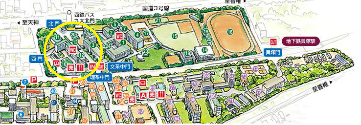

数物セミナー 冬の大談話会2015 in 九州
冬の大談話会2015にて九州に談話会が上陸! 12月19日、20日の2日間にわたり談話会を開催します。
数学や物理に興味のある学生を主な対象とした学部生による６つの講演と、
講演者や参加者を交えた交流、専門的な題材を扱ったポスターセッションの時間をお楽しみください。
ポスターセッションは、飛び入りも大歓迎です。印刷したポスターをお持ちください。
| 談話会とは | 過去の談話会 | |
| 数物セミナーでは、各大学の教室などを借りて不定期に談話会を行っています。 談話会とはどのようなものであるのか知りたい方はご覧ください。 | 過去に行われた談話会の講演の詳細および、 一部のUstream配信アーカイブ・講演スライドなどを掲載していますので 参考にしていただければと思います。 | twitterでも談話会の情報を配信しております。 アカウントをお持ちの方はフォローしてみてください。 |

|
|
数物セミナー公式Twitterアカウント |
日にち・場所
2015年12月19日（土）・20日（日）
九州大学 箱崎キャンパス 文系地区講義棟 207室
タイムテーブル
| 10:30～10:45 | 開会式 |
| 午前の部 10:45～12:00 |
『n次元体積と初等積分』 泉原 健吾 （九州大学理学部物理学科2年） |
| 午後の部（前半） 13:30～14:45 |
『中性子星について』 梅崎 英一 （佐賀大学理工学部物理科3年） |
| 午後の部（後半） 15:10～16:25 |
『流体にひそむ正則関数』 丸石 崇史 （九州大学理学部地球惑星科学科3年） |
| 16:25～ | ポスターセッション・交流 (ポスター発表希望の方は、ご自分でポスターの用意を お願いいたします。事前連絡は不要です) |
| 午前の部 10:45～12:00 |
『はじめての生物物理学』 仲間 聖 （九州大学理学部物理学科2年） |
| 午後の部（前半） 13:30～14:45 |
『イジング模型について』 吉田 郭冶 （九州大学理学部物理学科3年） |
| 午後の部（後半） 15:10～16:25 |
『有限群の歩き方』 佐藤 僚亮 （九州大学理学部数学科3年） |
| 16:25～ | ポスターセッション・交流 (ポスター発表希望の方は、ご自分でポスターの用意を お願いいたします。事前連絡は不要です) |
講演アブストラクト
◇『n次元体積と初等積分』 アブストラクト
◇『中性子星について』 アブストラクト
◇『流体にひそむ正則関数』 アブストラクト
◇『はじめての生物物理学』 アブストラクト
◇『イジング模型について』 アブストラクト
◇『有限群の歩き方』 アブストラクト
アクセス
最寄り駅地下鉄貝塚駅より徒歩10分。
下の図の12番の建物、共通講義棟2階に207教室があります。
箱崎キャンパス 文系地区近辺地図
生配信・録画配信
この談話会での生配信及び録画配信は未定となっております。